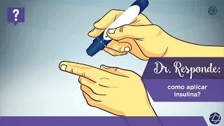

Tratamento de Diabetes tipo 1
O tratamento de diabetes tipo 1 correto envolve manter uma vida saudável e o controle da glicemia, a fim de evitar possíveis complicações da doença. Os principais cuidados para tratar o diabetes incluem:
Exercícios físicos
A atividade física é essencial no tratamento do diabetes para manter os níveis de açúcar no sangue controlados e afastar os riscos de ganho de peso. A prática de exercícios deve ser realizadas de três a cinco vezes na semana. Há restrição nos casos de hipoglicemia, principalmente para os pacientes com diabetes tipo 1. Dessa forma, pessoas com a glicemia muito baixa não devem iniciar atividade física, sob o risco de baixar ainda mais os níveis. Por outro lado, caso o diabetes esteja descontrolado, com glicemia muito elevada, o exercício pode causar a liberação de hormônios contrarreguladores, aumentando mais ainda a glicemia. Em todos os casos, os pacientes com diabetes devem sempre combinar com seus médicos quais são as melhores opções. Lembrando que o ideal é privilegiar atividades físicas leves, pois quando o gasto calórico é maior do que a reposição de nutrientes após o treino, pode haver a hipoglicemia.

Controle da dieta
Pessoas com diabetes devem evitar os açúcares simples presentes nos doces e carboidratos simples, como massas e pães, pois eles possuem um índice glicêmico muito alto. Quando um alimento tem o índice glicêmico baixo, ele retarda a absorção da glicose. Mas, quando o índice é alto, esta absorção é rápida e acelera o aumento das taxas de glicose no sangue. Os carboidratos devem constituir de 50 a 60% das calorias totais ingeridas pela pessoa com diabetes, preferindo-se os carboidratos complexos (castanhas, nozes, grãos integrais) que serão absorvidos mais lentamente.
Quando for praticar exercícios é importante verificar o controle glicêmico antes do início da atividade, para então escolher o melhor alimento - se a glicemia está muito baixa, é aconselhável dar preferência aos carboidratos, assim como deve-se evitá-los se estiver alta. A escolha do alimento depende também do tipo de exercício: exercícios aeróbicos de grande duração (como corrida e natação) tendem a baixar a glicemia, sendo necessária uma ingestão maior de alimentos.

Verificar a glicemia
Todos os portadores de diabetes tipo 1 precisam tomar insulina diariamente. No entanto, é importante fazer o autoexame para verificar sua glicose em casa. Para fazer essa medida é necessário ter em casa um glicosímetro, dispositivo capaz de medir a concentração exata de glicose no sangue. Existem diferentes tipos de aparelhos. Normalmente, a pessoa fura o dedo com uma agulha pequena chamada lanceta. Uma pequena gota de sangue aparece na ponta do dedo. Coloca-se o sangue em uma tira reagente que é inserida no aparelho. Os resultados aparecem em cerca de 30 a 45 segundos.
O médico ou outro profissional que trabalhe com diabetes ajudará a definir um cronograma de testes feitos em casa. O médico o ajudará a definir as metas relativas às taxas de glicose do paciente, que deve se basear nos resultados dos testes para alterar as refeições, suas atividades ou os medicamentos e, assim, manter os níveis de glicose normalizados. Este procedimento pode ajudar a identificar as altas e as baixas taxas de glicose no sangue antes que causem problemas.
Tipos de Insulina
- Insulina regular: é uma insulina rápida e tem coloração transparente. Após ser aplicada, seu início de ação acontece entre meia e uma hora, e seu efeito máximo se dá entre duas a três horas após a aplicação.
- Insulina NPH: é uma insulina intermediária e tem coloração leitosa. A sigla NPH que dizer Neutral Protamine Hagedorn, sendo Hagedorn o sobrenome de um dos seus criadores e Protamina o nome da substância que é adicionada à insulina para retardar seu tempo de ação. Após ser aplicada, seu início de ação acontece entre duas e quatro horas, seu efeito máximo se dá entre quatro a 10 horas e a sua duração é de 10 a 18 horas.
- Análogo de insulina: moléculas modificadas da insulina que o nosso corpo naturalmente produz, e podem ter ação ultrarrápida ou ação lenta. Existem alguns tipos de análogos ultrarrápidos disponíveis no mercado brasileiro, são eles: Asparte, Lispro e Glulisina. Após serem aplicados, seu início de ação acontece de cinco a 15 minutos e seu efeito máximo se dá entre meia e duas horas. São encontrados também dois tipos de ação longa: Glargina e Detemir. A insulina análoga Glargina tem um início de ação entre duas a quatro horas após ser aplicada, não apresenta pico de ação máxima e funciona por 20 a 24 horas. Já o análogo Detemir tem um início de ação entre uma a três horas, pico de ação entre seis a oito horas e duração de 18 a 22 horas.
- Pré-mistura: consiste de preparados especiais que combinam diferentes tipos de insulina em várias proporções. Podem ser 90:10, ou seja 90% de insulina lenta ou intermediária e 10% de insulina rápida ou ultrarrápida. Eles também pode ter outras proporções, como 50:50 e 70:30.
Aplicação da insulina
A insulina deve ser aplicada diretamente no tecido subcutâneo (camada de células de gordura), logo abaixo da pele. A espessura da pele gira em torno de 1,9 a 2,4 milímetros (mm) nos locais de aplicação da insulina. As agulhas utilizadas podem ter 4, 5, 6 ou, no máximo, 8 mm. O ângulo de aplicação varia em função da quantidade de gordura da área de aplicação do paciente com diabetes. Por exemplo, no caso de uma pessoa magra e com pouca gordura na região de aplicação, corre-se maior risco de atingir os músculos quando se utiliza agulha mais longa e ângulo de aplicação de 90° em relação à superfície da pele. Nesses casos, pode-se optar por uma agulha mais curta, fazer uma prega cutânea (de pele) e aplicar em ângulo de 45°. Lembrando que a prega na pele para quem tem diabetes é utilizada a fim de evitar que a agulha atinja os músculos que se situam logo abaixo do tecido adiposo, pois nesse local a insulina pode ser absorvida mais rapidamente. Deve haver um rodízio entre os locais de aplicação, pois essa conduta diminui o risco de complicações na região da aplicação, tal como a hipertrofia (pontos endurecidos abaixo da pele) ou atrofia (depressões no relevo da pele ocasionado por perda de gordura). O ideal é aguardar 20 a 30 dias para voltar a aplicar no mesmo ponto. A distância entre dois pontos de aplicação deve ser de mais ou menos três centímetros (dois dedos). No abdome, as insulinas podem ser absorvidas de forma mais rápida do que nos braços e coxas. A escolha das agulhas pode seguir as seguintes recomendações:
- Agulhas com 4, 5 ou 6 mm podem ser usadas por adultos obesos e não obesos e, geralmente, não requerem a realização de prega cutânea, especialmente para as agulhas de 4 mm
- Em geral, quando são usadas agulhas curtas (4, 5 ou 6 mm), as aplicações deveriam ser feitas em ângulo 90º. Contudo, quando a aplicação for realizada nos membros ou em abdomes magros, uma prega cutânea pode ser feita para garantir que não haja injeção intramuscular, mesmo com agulhas de 4 e 5 mm. Neste caso, as injeções com agulha de 6 mm só deveriam ser usadas com a realização de uma prega cutânea ou em ângulo de 45º
- Não há razão médica para usar agulhas mais longas do que 8 mm.
- Agulhas com 4, 5 ou 6 mm podem ser utilizadas. Não há razão médica para usar agulhas mais longas
- Crianças e adolescentes com diabetes magros e aqueles que injetam em braços e pernas podem precisar fazer uma prega cutânea, especialmente quando são usadas agulhas de 5 ou 6 mm. Quando for usada uma agulha de 6 mm, a aplicação com ângulo de 45º pode ser realizada no lugar da prega cutânea
- Para a maioria das crianças, exceto aquelas muito magras, uma agulha de 4 mm pode ser inserida a 90º sem necessidade de prega cutânea. Se apenas uma agulha de 8 mm estiver disponível (que pode acontecer com usuários de seringas), realizar a prega cutânea e, além disso, inserir a agulha em ângulo de 45º.
- O aparecimento de ecmoses (manchas roxas) é comum no local de aplicação de insulina
- As agulhas curtas (4, 5 ou 6 mm) podem ser usadas pelas gestantes
- Quando apenas uma agulha de 8 mm estiver disponível, a região do abdome deve ser evitada e a aplicação realizada com a prega cutânea e em ângulo de 45°
- É prudente realizar a prega cutânea em todos os locais de aplicação
- Para evitar complicações, recomenda-se evitar a aplicação de insulina na região abdominal, especialmente ao redor do umbigo, no último trimestre da gestação. Recomenda-se a aplicação de insulina na região glútea (nádegas) para as gestantes magras. A região dos flancos do abdome pode ser usada, também, desde que se faça a prega cutânea.
Os melhores locais para a aplicação de insulina são:
- Abdome (barriga)
- Coxa (frente e lateral externa)
- Braço (parte posterior do terço superior)
- Região da cintura
- Glúteo (parte superior e lateral das nádegas).
Passo-a-passo no momento de aplicação da insulina:
- Separe todo do material: insulinas prescritas, seringa, agulha, algodão e álcool
- Lave bem as mãos com água e sabão
- Em seguida, limpe os locais de aplicação com algodão embebido em álcool. O ideal é utilizar uma nova seringa e agulha em cada aplicação
- As insulinas NPH e as pré-misturas devem ser suavemente misturadas, rolando o frasco entre as mãos aproximadamente 20 vezes, sem agitar o frasco, até o líquido ficar leitoso e homogêneo. Esse procedimento não é necessário para as insulinas transparentes
- Limpe a tampa de borracha da parte superior dos frascos com algodão embebido em álcool em um sentido único
- Aspire uma quantidade de ar para dentro da seringa igual aquela prescrita mantendo a agulha tampada com a sua capa de plástico
- Retire a capa da agulha e apoie o frasco em uma superfície plana. Introduza a agulha através da tampa de borracha do frasco de insulina e injete o ar que está dentro da seringa para dentro do frasco
- Vire o frasco de cabeça para baixo e aspire a quantidade de insulina prescrita. Se houver bolhas na seringa, injetar a insulina de volta no frasco e repetir o procedimento
- Retire a agulha do frasco
- Limpe o local escolhido passando o algodão embebido em álcool sobre a pele sempre em um único sentido. Após passar o álcool, não aplicar a insulina até que a pele esteja completamente seca
- Com a seringa entre os dedos, como se fosse uma caneta, deve-se fazer um movimento rápido em direção à pele (movimento de arremesso de um dardo) em ângulo de 90º ou 45º conforme orientado. Fazer a prega cutânea quando necessário. Já a injeção da insulina deve ser feita de maneira lenta. Aplicar a insulina na temperatura ambiente ajuda a reduzir a dor durante a aplicação. O ideal é retirar o frasco de insulina da geladeira 15 minutos antes da aplicação
- Retire a agulha da pele e pressione o local suavemente com um algodão seco. Não se deve fazer massagem na região de aplicação, pois isso pode aumentar o fluxo sanguíneo e alterar a absorção da insulina. Tampe imediatamente a agulha com a capa para evitar contaminação a acidentes
- O uso das canetas deve ser realizado de acordo com as instruções do fabricante de cada uma delas. Seu uso deve ser restrito a apenas um paciente. As agulhas devem ser imediatamente desconectadas da caneta e descartadas após a aplicação e usadas apenas uma vez para evitar contaminação e infecção. Após a aplicação da insulina, conte até 10 (dez segundos) para retirar da agulha. Quando forem aplicadas doses maiores, pode ser necessário contar até 20 segundos, a fim de evitar que parte da insulina volte para a superfície da pele quando a agulha for retirada. Essa contagem não é necessária para aplicação com seringas.
O médico ou outro profissional que trabalhe com diabetes ajudará a definir um cronograma de testes feitos em casa. O médico o ajudará a definir as metas relativas às taxas de glicose do paciente, que deve se basear nos resultados dos testes para alterar as refeições, suas atividades ou os medicamentos e, assim, manter os níveis de glicose normalizados. Este procedimento pode ajudar a identificar as altas e as baixas taxas de glicose no sangue antes que causem problemas.
Como aplicar a insulina:
Recomendações
Maneire no consumo de bebidas alcoólicas
O consumo de álcool não é proibido, mas deve ser moderado e sempre acompanhado de um alimento, pois o consumo isolado pode causar hipoglicemia. O que pode causar enjoo, tremores pelo corpo, fome excessiva, irritação e dores de cabeça. Também é importante fazer o monitoramento de glicemia antes e depois de consumir bebidas alcoólicas. Cuidado com cervejas e bebidas doces ou à base de carboidratos. Elas têm alto índice glicêmico e podem trazer problemas.
Evite saunas e escalda pés
O diabetes afeta a microcirculação, lesionando as pequenas artérias (arteríolas) que nutrem os tecidos, que atingem especialmente as pernas e os pés. Em função desta alteração circulatória, os riscos de exposição às altas temperaturas e aos choques térmicos podem agravar ou desencadear quadros de angiopatias e outros problemas cardíacos.
Aumente os cuidados com os olhos
As células da córnea do paciente com diabetes tipo 1 não têm a aderência que se encontra na maioria daqueles que não tem diabetes. Essa fragilidade é a porta de entrada para uma série de infecções oportunistas e doenças como catarata e glaucoma. É preciso fazer o exame do fundo de olho cinco anos após o diagnóstico para os tipo 1, e depois disso em uma frequência anual. Isso serve para ajudar a identificar precocemente alguma alteração na retina, como a retinopatia diabética.
Controle o estresse
Pessoas com diabetes tipo 1 têm maiores chances de ter ansiedade e depressão. Os pacientes podem sentir uma sensação de ansiedade em relação ao controle da hipoglicemia, da aplicação de insulina, ou com o ganho de peso.
Corte o cigarro
Diabetes tipo 1 e cigarro multiplicam em até cinco vezes o risco de infarto. As substâncias presentes no cigarro ajudam a criar acúmulos de gordura nas artérias, bloqueando a circulação. Consequentemente, o fluxo sanguíneo fica mais e mais lento, até o momento em que a artéria entope. Além disso, fumar também contribui para a hipertensão no paciente com diabetes.
Cuide da saúde bucal
A higiene bucal após cada refeição para o paciente com diabetes tipo 1 é fundamental. Isso porque o sangue dos portadores de diabetes, com alta concentração de glicose, é mais propício ao desenvolvimento de bactérias. Por ser uma via de entrada de alimentos, a boca acaba também recebe diversos corpos estranhos que, somados ao acúmulo de restos de comida, favorecem a proliferação de bactérias. Realizar uma boa escovação e ir ao dentista uma vez a cada seis meses é essencial.
Medicamentos
| Tipos de insulina | Nomes genéricos | Como é utilizada |
|---|---|---|
| Insulina de ação rápida | Regular, Asparte, Lispro, Glulisina | Normalmente é usada antes das refeições ou logo após comer para manter os níveis de glicose regulados após a alimentação, impedindo que a glicose se acumule no sangue. |
| Insulina lenta | NPH, Detemir, Glargina | Geralmente é utilizada apenas de 1 a 2 vezes por dia, pois a sua ação dura de 12 a 24 horas, chegando alguma a atingir 30 horas, mantendo os níveis de açúcar estáveis durante todo o dia. |